Prepare OSGeoLive for Spatial Ecology courses¶
In order to execute the Spatial Ecology exercise we will need first install the OSGeoLive Linux Virtual Machine and then populate with additional software and data.
OSGeoLive is a self-contained bootable DVD, USB thumb drive or Virtual Machine based on Lubuntu, that allows you to try a wide variety of open source geospatial software without installing anything. It is composed entirely of free software, allowing it to be freely distributed, duplicated and passed around (source https://live.osgeo.org/en/index.html)
You can follow the below instructions, moreover the OSGeoLive installation YouTube video can guide along the full procedure.
For running a Virtual Machine in your OS we need a virtualization software such as Virtualbox and a vmdk file that contains the virtualized OS.
Install Virtualbox
Open you browser and go to https://www.virtualbox.org/wiki/Downloads and base on your OS download the Virtualbox executable and install it.
Download OSGeoLive
Open you browser and go to https://sourceforge.net/projects/osgeo-live/files/. Click on the last version-folder and proceed to download the osgeolive-??.0-amd64.vmdk.7z. At the time of writing the last version is 13 so vmdk file is osgeolive-13.0-amd64.vmdk.7z. The osgeolive-13.0-amd64.vmdk.7z is a quite large file therefore according to your Internet connection it can take several hours. When the download is finished unzipped using 7zip. Mac users can use The Unarchiver for unzip the osgeolive-13.0-amd64.vmdk.7z. A this point you are ready to load the osgeolive-13.0-amd64.vmdk inside Virtualbox.
Install OSGeoLive inside Virtualbox
Lunch Virtualbox from OS and follow the below instructions.
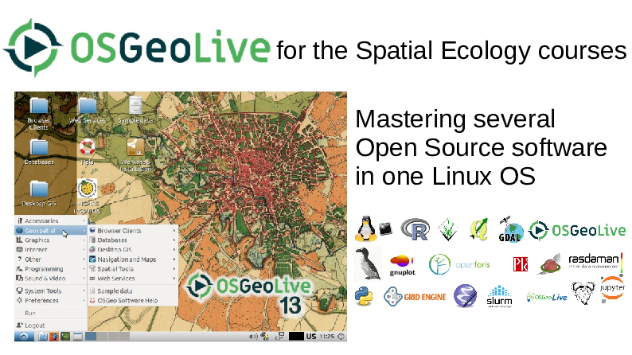 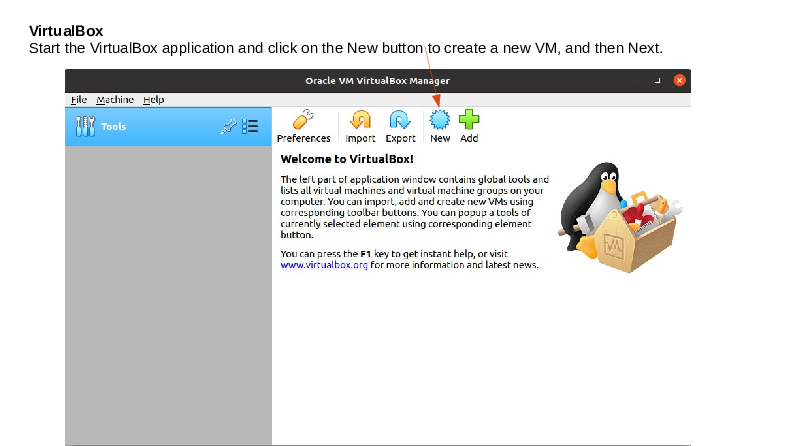 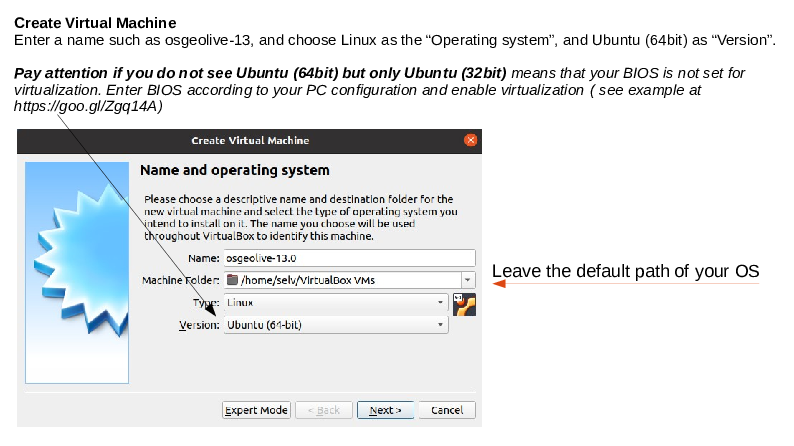 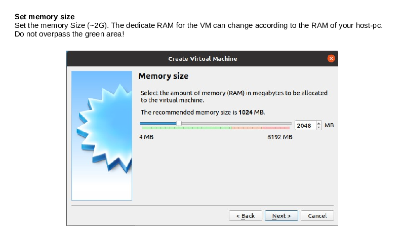 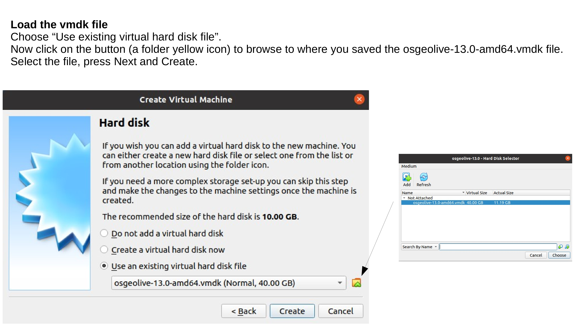 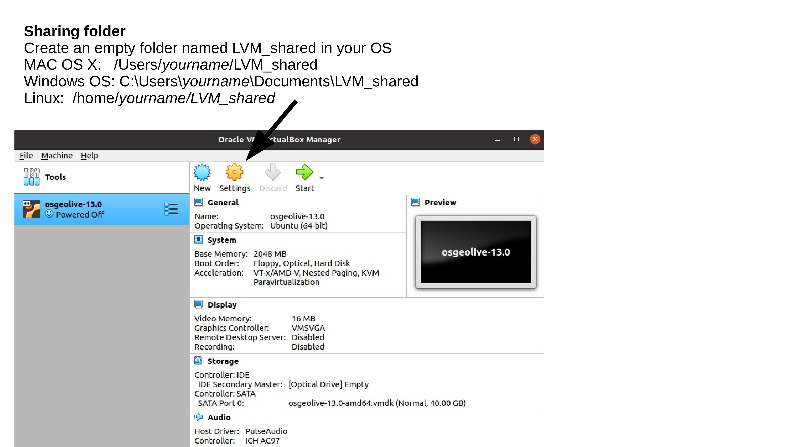 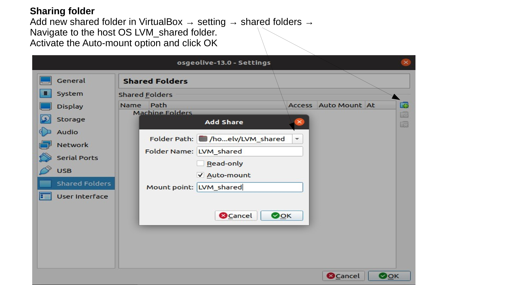 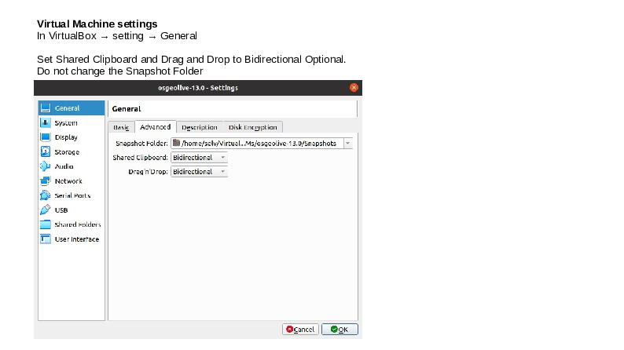 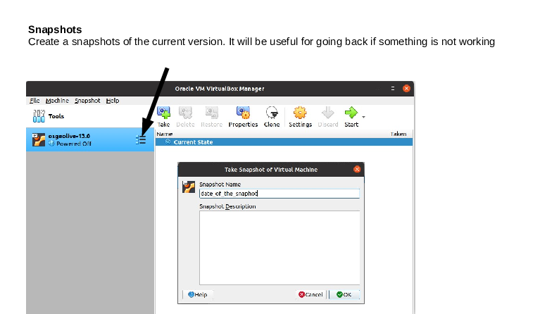 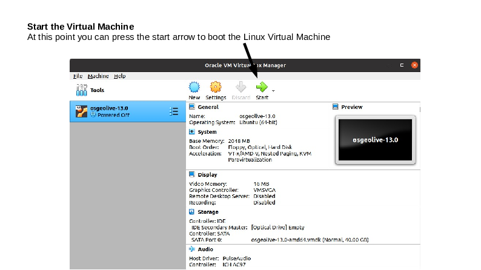
Test your OSGeoLive Virtual Machine
If you follow all the steps correctly the OSGeoLive Virtual Machine you should pop-up in the Virtual Box window showing something like this:
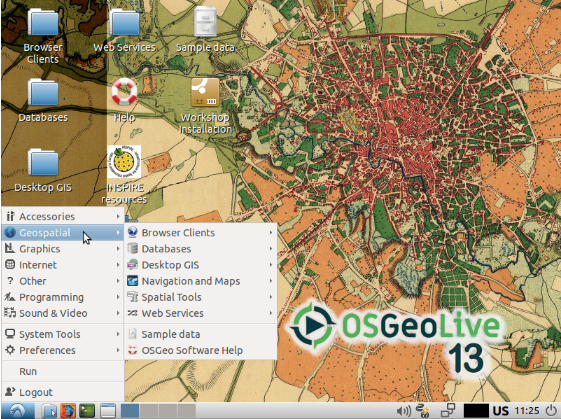
If the screen is very small try to enlarge, and if the enlargement is not working properly try to reboot. Sometime the Virtual Box guest edition is not kick-in so you have to redo the procedure.
Open the bash terminal (green icon in the down left corner) and run line by line the following codes. The sudo password is “user”. For security what you type is not shown, anyway it is recorded. After typed the password press enter.
Update the OS. This operation can last few minutes. Be patient. If during the installation, some screen pop-up asking some question just accept the default option.
sudo apt update # update the repositories
sudo apt upgrade -y # installation of the sw
Add to Virtualbox additional add-on to improve the graphical user interface of the VM. If during the installation some screen pop-up asking some question just accept the default option. From the Virtualbox menu press Device > Insert Guest Addition CD image
cd /media/user/VBox_GAs_*
sudo ./VBoxLinuxAdditions.run
Another test that you should do it is to test if the shared folder is correctly done. Open a bash terminal and run
ls /home/selv/LVM_shared
If are able to list the folder then means that the sharing folder operation is properly done.
Populate OSGeoLive with additional software
At this point the OSGeoLive Virtual Machine is ready to install additional software and data for running Spatial Ecology courses. In the bash terminal run the following lines
cd /tmp/
wget https://raw.githubusercontent.com/selvaje/SE_data/main/exercise/00_install_additional_sw_data_4SE_courses.sh
sudo bash ./00_install_additional_sw_data_4SE_courses.sh
as before the sudo password is “user”.
Test installed additional software
In the bash terminal run the following lines one by one. Close the window that each time pop-up.
Test pktools
pkfilter --help
You should see the pkfilter manual instructions
Test OpenEV
source ~/.bashrc
openev /home/user/jupyter/notebook_gallery/Rasterio/data/world.rgb.tif /home/user/.local/share/cartopy/shapefiles/natural_earth/physical/ne_110m_land.shp
You should see the openev software popup and ope the the tif and shp files.
Test R studio
rstudio
You should see the rstudio software pop-up